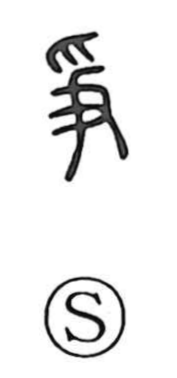

争

Kun: arasou | On: so
to contend ・ to strive ・ to fight
Explanation
Originally written as 爭, the character shows two hands—爪 above and 又 below—grasping a staff-like object from opposite ends and pulling against one another, which gives the sense of contending or struggling. The same 争 form appears in 静 (靜), where it depicts hands holding the plow-shaped 力 from above and below; although the shape is the same, its internal structure there is different. In 浄 (淨), the 争 element corresponds to that component from 静. From this pictorial basis the meanings “to contend” and “to strive” developed.